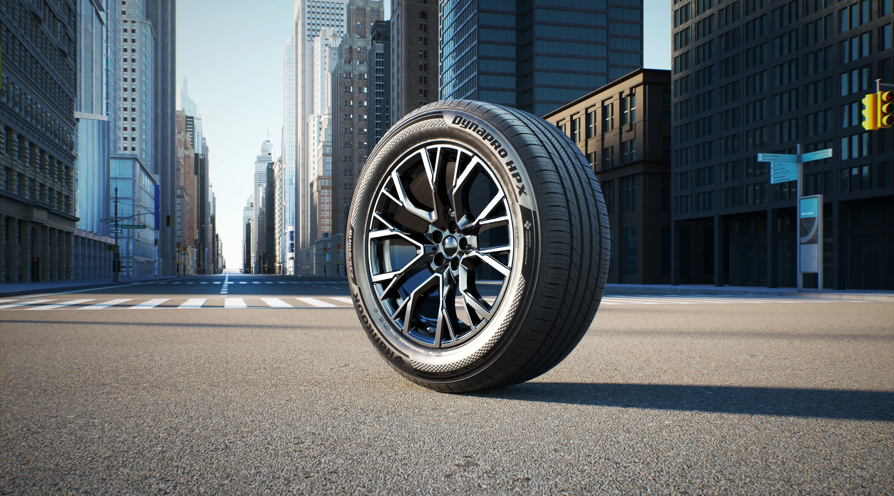
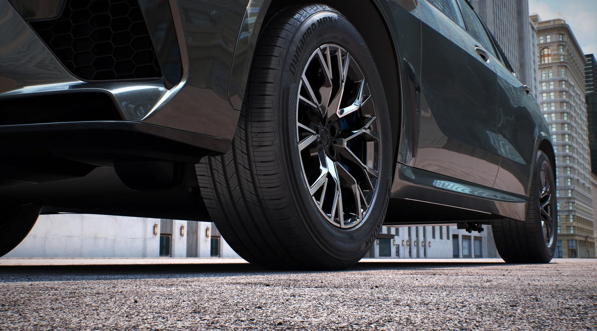
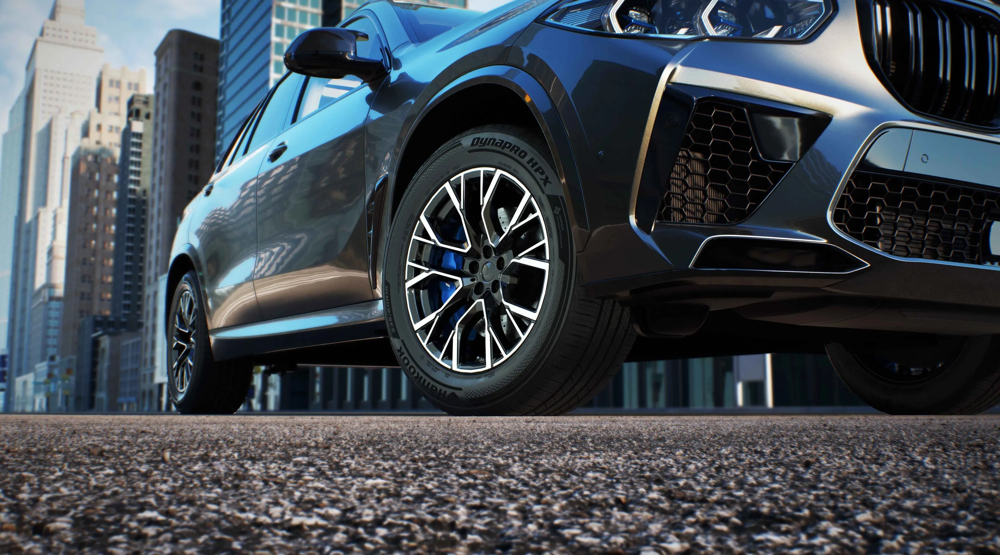

▲ 한국타이어가 공개한 다이나프로 2026 브랜드 필름의 한 장면 ⓒ 한국타이어앤테크놀로지
한국타이어앤테크놀로지가 SUV·픽업트럭 전용 타이어 브랜드 '다이나프로(Dynapro)'의 2026년형 브랜드 필름을 공개했다. 이번 영상은 온로드부터 험로까지 종횡무진하는 SUV 오너들의 라이프스타일을 담아, 세계 최대 SUV·픽업 시장인 북미에서 브랜드 존재감을 끌어올리기 위한 마케팅 전략의 일환으로 풀이된다.
1. 무엇을 공개했나 — 'BUILT WITHOUT LIMITS'
한국타이어는 이번 브랜드 필름을 통해 다이나프로가 지향하는 가치를 'BUILT WITHOUT LIMITS(한계 없이 만들어지다)'라는 한 문장으로 압축했다. 도심과 고속도로는 물론 비포장 오프로드 구간까지 넘나드는 다양한 주행 장면을 통해, 다이나프로가 특정 노면이나 조건에 국한되지 않는 '만능형 SUV 타이어'임을 시각적으로 보여주는 데 초점을 맞췄다.
영상은 국내 시장에서 2023년부터 3년 연속 SUV 전용 프리미엄 컴포트 타이어 부문 베스트셀러를 기록한 다이나프로 HPX(제품코드 RA43)를 중심으로 전개된다. 안정적인 핸들링과 접지력, 정숙성을 강조하는 장면들이 이어지며, 한국타이어의 글로벌 통합 브랜드 '한국(Hankook)'이 보유한 기술력을 다이나프로 라인업에 집약했다는 점을 부각한다. 영상은 한국타이어 공식 웹사이트를 비롯해 유튜브, 인스타그램 등 다양한 디지털 채널에서 공개됐다.
2. 다이나프로 라인업 구성 — 온로드부터 험로까지
다이나프로는 SUV·픽업트럭 전용으로 설계된 브랜드로, 크게 온로드 지향 모델과 오프로드 지향 모델로 나뉜다.
- 다이나프로 HPX(온로드 프리미엄 컴포트) — 도심·고속道 주행 중심의 SUV 오너를 겨냥한 플래그십 모델로, 16~22인치까지 폭넓은 사이즈를 갖췄다. 미국 시장 기준 최대 7만 마일(약 11만km) 트레드웨어 보증을 제공한다.
- 다이나프로 에보 AS(Evo AS, 올웨더 성능) — 2025년 1월 북미 시장에 새로 출시된 럭셔리 SUV용 올시즌 퍼포먼스 타이어로, 19~22인치 26개 사이즈에 5만 마일 트레드웨어 보증이 적용된다.
- 다이나프로 AT2 / HT(올터레인·하이웨이 테런) — 오프로드 주행 빈도가 있는 SUV·픽업 오너를 위한 모델로, 닛산 프론티어 등 완성차 신차용(OE) 타이어로 채택된 바 있다. 상위 라인인 AT2 익스트림(AT2 Xtreme)은 더 거친 노면을 겨냥해 사이드월을 보강했다.
- 다이나프로 XT(러기드 테런) · MT2(머드 테런) — 올터레인과 머드 타이어 사이의 간극을 메우는 러기드 테런 XT와, 험로·머드 주행 비중이 높은 픽업 오너를 겨냥한 최상급 오프로드 라인 MT2(RT05)로 구성된다.
이처럼 온로드 컴포트부터 오프로드 익스트림까지 폭넓은 스펙트럼을 갖췄다는 점이, 이번 브랜드 필름이 강조하는 '한계 없음(WITHOUT LIMITS)'의 실체다.

▲ 다이나프로 HPX는 온로드 컴포트 성능을 앞세운 SUV 전용 프리미엄 타이어다 ⓒ 한국타이어앤테크놀로지
3. 왜 북미인가 — 세계 최대 SUV·픽업 시장
한국타이어가 다이나프로 마케팅에 힘을 싣는 배경에는 북미 시장의 압도적 규모가 있다. 북미는 전 세계에서 SUV·픽업트럭 비중이 가장 높은 시장으로, 포드 F-150, 쉐보레 실버라도·타호, GMC 시에라 등 대형 SUV·픽업 완성차 브랜드들의 본진이기도 하다. 한국타이어는 이들 완성차 브랜드에 다이나프로 계열 타이어를 신차용(OE)으로 공급하는 파트너십을 지속 확대해왔다.
미국 조지아주 클락스빌 공장 등 북미 현지 생산 체계를 갖추고 있다는 점도 강점으로 꼽힌다. 관세·물류 리스크에 상대적으로 덜 노출된 채로 북미 완성차 업체들과 공급 계약을 맺을 수 있기 때문이다. 북미 애프터마켓(교체용 타이어) 시장에서도 SUV·픽업용 타이어 수요가 꾸준히 늘고 있어, 다이나프로는 한국타이어 매출 성장의 핵심 축으로 평가된다.

▲ 도심 주행 환경에서의 접지력과 정숙성을 강조한 다이나프로 HPX ⓒ 한국타이어앤테크놀로지
4. 기술력 — '한국(Hankook)' 통합 브랜드 전략
한국타이어는 2023년부터 사명과 브랜드명을 '한국(Hankook)'으로 통합하는 글로벌 리브랜딩을 진행해왔다. 이번 다이나프로 브랜드 필름 역시 이런 통합 브랜드 전략의 연장선에 있다. 개별 제품 성능을 알리는 데 그치지 않고, '한국' 브랜드가 축적한 기술력이 다이나프로 같은 하위 브랜드에도 일관되게 녹아 있다는 메시지를 전달하려는 의도로 해석된다.
다이나프로 HPX의 경우 자체 실측 기준 경쟁 모델 대비 우수한 트레드 수명을 강조하고 있으며, 미국 기준 도로 위험 보증(road hazard warranty) 등 소비자 신뢰를 높이는 사후 서비스 정책도 함께 운영 중이다. 다이나프로 제품 정보는 한국타이어 미국 공식 홈페이지에서 확인 가능하다.

▲ 다이나프로 HPX는 미국 기준 최대 7만 마일 트레드웨어 보증을 제공한다 ⓒ 한국타이어앤테크놀로지
5. 국내 소비자와의 접점 — 이미 팔리고 있는 '다이나프로'
다이나프로는 북미 전용 브랜드가 아니라 국내에서도 이미 판매 중인 라인업이다. 특히 다이나프로 HPX는 앞서 언급했듯 국내 SUV 전용 프리미엄 컴포트 타이어 시장에서 2023년부터 3년 연속 판매 1위를 지키고 있어, 이번 브랜드 필름이 강조하는 성능·기술 메시지는 국내 SUV·픽업 오너에게도 그대로 적용된다. 신차 교체나 광폭 휠 업그레이드를 고려하는 국내 운전자라면 굳이 해외 직구를 거치지 않아도 국내 타이어 유통망(하이마트, 타이어뱅크 등 교체 전문점)에서 동일 라인업을 구매할 수 있다.
다만 AT2 익스트림이나 MT2 같은 정통 오프로드 라인은 국내 픽업·SUV 오프로드 동호인 사이에서 수요가 상대적으로 제한적이어서, 북미만큼 다양한 사이즈가 상시 유통되지는 않는다는 점은 참고할 부분이다.
6. 전망 — SUV 타이어 경쟁, 더 치열해진다
브리지스톤 듀얼러(Dueler), 미쉐린 라티튜드(Latitude), 콘티넨탈 크로스컨택트(CrossContact) 등 글로벌 경쟁사들도 SUV·픽업 전용 라인업을 앞다퉈 강화하고 있는 만큼, 한국타이어의 이번 브랜드 필름 공개는 단순한 광고 캠페인을 넘어 북미 SUV 타이어 시장에서의 점유율 경쟁 선언으로도 읽힌다.
업계에서는 한국타이어가 다이나프로를 앞세워 완성차 OE 공급 확대와 애프터마켓 판매를 동시에 끌어올리는 '투트랙' 전략을 이어갈 것으로 보고 있다. 향후 전기 SUV 전용 저소음·고하중 사양 등 라인업 세분화도 이어질 가능성이 거론된다.